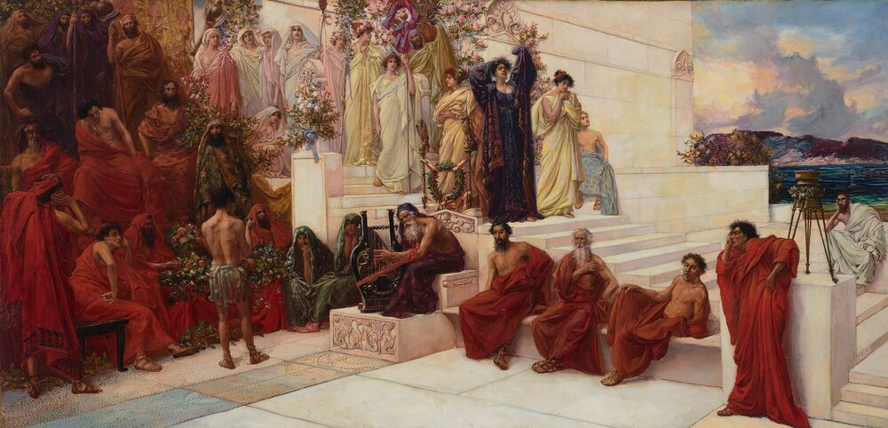

C2 · Culture & Traditions
What Doesn't Translate
Everything can be translated. The question is what arrives.
Reading
Play the audio and follow along, then read it again on your own. Tap or hover over a highlighted word to see what it means.
There is a familiar list of words said to be untranslatable. The Portuguese saudade is always on it. So is the German Schadenfreude, the Japanese komorebi, the Welsh hiraeth. The list circulates endlessly and flatters everyone who reads it, because each of us gets to believe that our language holds something the others cannot reach. Almost all of it is nonsense, and the small part that is not is far more interesting than the list suggests.
Start with the nonsense. Saudade can be translated. It takes a clause rather than a word — the ache of missing something you may never have again, which is not quite longing and not quite grief — and the translation is perfectly serviceable. English has no single term for it, which is a fact about English vocabulary, not about the limits of English. Schadenfreude was untranslatable until English simply took it, which is what English does, and it is now ordinary. The claim of untranslatability usually turns out to mean one word there, several words here, and that is a difference of economy, not of possibility.
What genuinely resists translation is not vocabulary at all. It is everything that depends on the reader already knowing something.

Humour is the obvious casualty, and it fails in a specific way worth naming. A joke that turns on a pun dies because the two meanings that collided in the original do not collide in the target language, and nothing can be done about it. But most humour does not turn on puns. It turns on a shared expectation that the joke violates, and the expectation is cultural rather than linguistic. Render an English joke about queueing into Portuguese and every word will arrive intact while the humour stays behind, because the joke was never about the words. It was about an attitude to queues that the reader was assumed to hold before the sentence began.
Register fails in the same way and more quietly. Languages do not divide formality at the same points, and a sentence that is neutral in one can land as cold or as unexpectedly intimate in another. Portuguese and English disagree about where politeness lives — Portuguese carries much of it in verb forms and in the choice of address, English in modal verbs and hedging — so a faithful translation can be technically perfect and socially wrong. This is the failure that does real damage, because it is invisible. A misjudged joke merely falls flat; a misjudged register makes the speaker seem rude, servile or insincere, and nobody involved can point to a mistake.
Then there is the problem of words that carry a whole argument inside them. Any language's vocabulary for law, bureaucracy and social class is a compressed history, and the compression is what will not travel. English freedom and Portuguese liberdade overlap almost entirely as dictionary entries and diverge sharply in what they summon — the English word drags behind it several centuries of a particular constitutional quarrel. Translate it faithfully and you have moved the denotation across while leaving the argument on the other side of the border.
All of which suggests a conclusion the untranslatable-words lists get precisely backwards. Those lists imply that translation fails at the exotic edges, in the rare and beautiful word with no counterpart. In fact translation is reliable at the edges, because a strange word announces its own strangeness and the translator slows down, adds a gloss, takes the three words needed. Translation fails in the middle, on the ordinary vocabulary nobody thinks to check, where a word looks like a straightforward equivalent and quietly is not. The false friends are the standard example and the least of it. The deeper trouble is words that are genuine equivalents in denotation and carry different weight: a word that is neutral here and faintly bureaucratic there, formal in one language and merely old-fashioned in the other.
The practical consequence for anyone working across two languages is the reverse of the intuitive one. Do not worry about saudade. It is marked as difficult, and marked difficulties get handled. Worry about the words you are confident of — and about the joke you are certain will land.
Key Vocabulary
- untranslatable said to be impossible to render in another language
- to circulate to be passed around repeatedly
- to flatter to please somebody by telling them something agreeable about themselves
- ache a dull, continuing pain, often used of feeling
- longing a strong wish for something far away or lost
- grief the pain of losing somebody
- serviceable good enough to do the job, without being elegant
- economy the use of fewer words or means to the same end
- to resist to hold out against; to not yield to
- casualty the thing or person that suffers the loss
- pun a joke that turns on a word with two meanings
- to collide to crash into each other
- to render to translate or express in another form
- intact whole; not damaged
- to queue to stand in a line and wait — British; Americans stand in line
- to land to have its intended effect on a listener
- servile too eager to obey or please
- insincere not meaning what you say
- to fall flat to fail to have any effect
- bureaucracy official administration and its rules
- to summon to call up; to bring to mind
- to drag behind to carry along as unwanted weight
- denotation what a word literally refers to, as against what it suggests
- gloss a short explanation added to a difficult word
- false friend a word that looks the same in two languages but means something different
What Doesn't Translate — C2 · Culture & Traditions · Renan the Teacher, English Language Academy · https://renangrossi.github.io/englishclasses/reading/c2/what-doesnt-translate.html
Interactive Exercises
Practice
Complete each exercise, then click Submit to see your score and an explanation for every answer.
Speaking & Writing
Discussion
There are no right answers here — use these to practice speaking, or write a short answer to each.
- Name a word in your language you were told was untranslatable. Try translating it in one clause.
- Describe a joke that died in translation. Was it the words or the expectation?
- Where does politeness live in your language — in verbs, in address, in vocabulary?
- The author says the real risk is the words you are confident about. Which English words are you confident about?
- Write about 300 words on something you had to explain rather than translate.